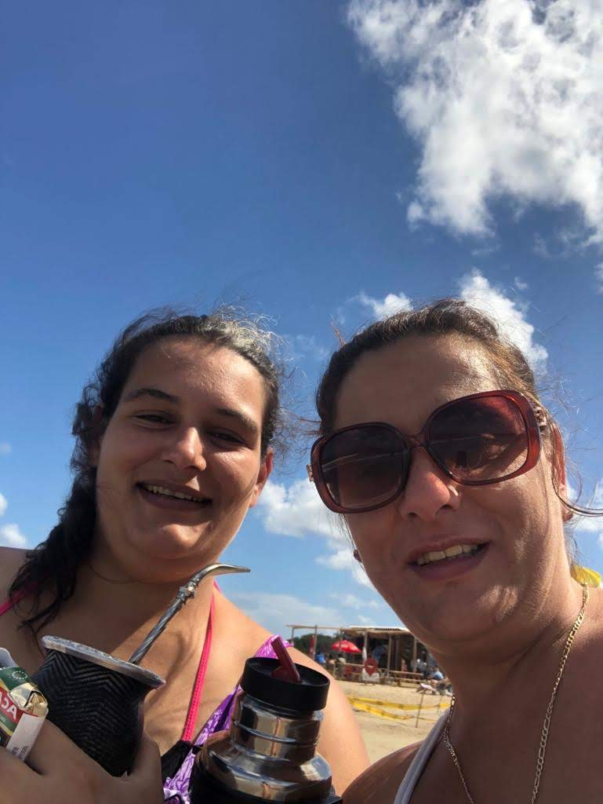
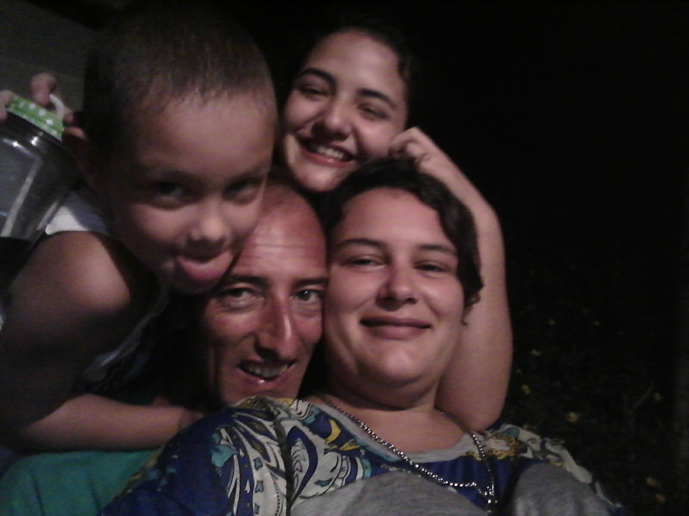

Me llamo Lucía Cabral, mi madre es juvilada de auxiliar de servicio y mi padre es mecánico, soy la menor de 4 hermanos con los que me llevo una gran diferencia de edad.
Tengo un hijo de 8 años, actualmente estoy en pareja, hace 4 años, de quién estoy esperando un hijo, ademas el tiene una hija de 16 años quién vive con nosotros.
Desde los 18 años hasta los 23 años me dedique a trabajar en tapiceria, solo no trabaje durante mi embarazo en ese momento trabaje en atención al cliente de una panaderia.
Desde 2014 hasta la actualidad estudio profesorado de matemáticas, ya que una de mis afisiones son las matemáticas y además me apaciona educar, ya que creo que lo mas lindo que se le puede brindar como adulto a las generaciones venideras es la educación y la cultura. Además este año descubrí la programación web la cual me gusto mucho y me llamo la atención lo ligada que esta al pensamiento lógico matemático y los desafíos mentales que me planteó para poer aprender lo básico de programar.